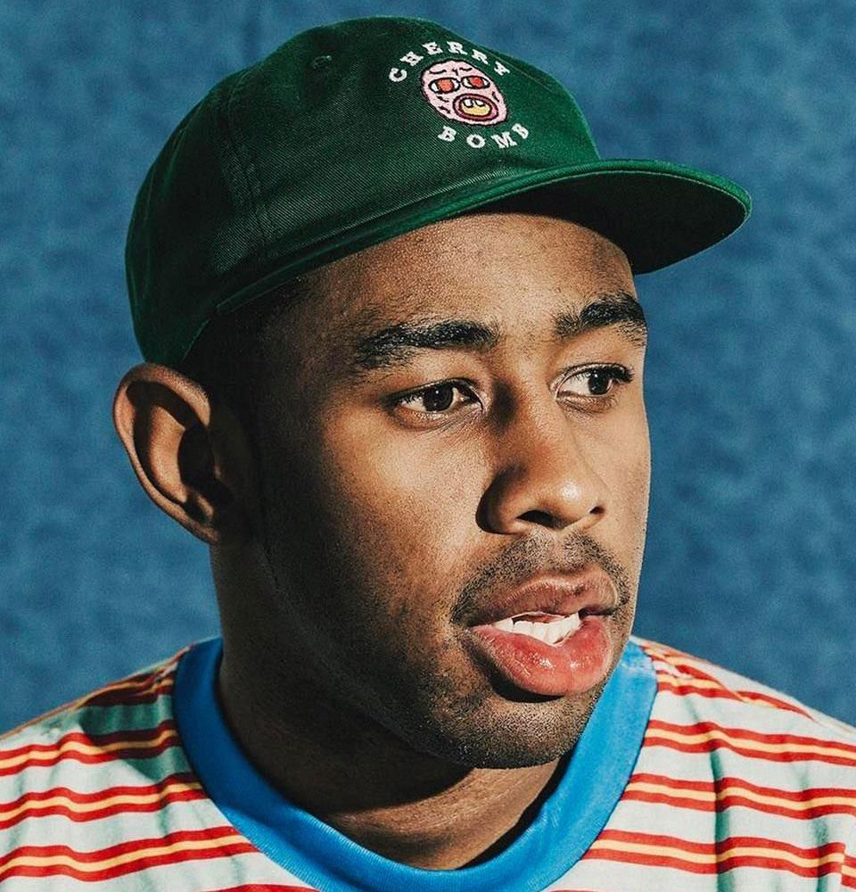

Nome de nascimento: Tyler Okonma
Local de nascimento: Los Angeles, Califórnia
Data de nascimento: 6 de março de 1991
Anos em atividade: 2007 - Dias atuais

Tyler, the Creator nasceu como Tyler Gregory Okonma em Los Angeles, Califórnia, em 6 de março de 1991. Ele cresceu em uma casa predominantemente feminina, criado pela mãe e pela avó. Como não conheceu o pai (um tema que ele aborda em várias músicas, como "Bastard" e "Answer"), ele passou muito tempo sozinho ou imerso em seus próprios mundos.
Tyler não era o aluno mais estável do mundo. Ele chegou a frequentar 12 escolas diferentes em apenas sete anos, entre as regiões de Los Angeles e Sacramento. Isso fez dele um "eterno novato", o que o forçou a desenvolver uma personalidade forte para se adaptar, mas também o tornou um tanto isolado socialmente.
Sua carreira musical começou na internet e decolou a partir daí. Seu nome artístico surgiu de seu perfil no MySpace, plataforma que ele usava para interagir com outros artistas e postar suas primeiras músicas no início dos anos 2000. Em 2007, a incursão de Okonma na música pela internet o levou à formação do coletivo musical Odd Future, também conhecido como Odd Future Wolf Gang Kill Them All e OFWGKTA. Além de Okonma, o coletivo contou com membros como Hodgy Beats, Jasper Dolphin, Mike G, Left Brain, Domo Genesis, Matt Martians, Pyramid Vritra, Casey Veggies, Earl Sweatshirt, Syd tha Kid, Taco e Frank Ocean ao longo dos anos, entre outros. A primeira mixtape do Odd Future foi lançada em 2008. Em 2011, o grupo fundou sua própria gravadora, a Odd Future Records.
Tyler, the Creator lançou diversos projetos solo aclamados pela crítica enquanto ainda fazia parte do Odd Future. Seu primeiro trabalho foi a mixtape Bastard, em 2009. Em seguida, lançou a faixa "Yonkers" em 2010, antes de lançar seu primeiro álbum de estúdio, Goblin, em 2011.
Criou a marca de moda Golf Wang, inspirada na cultura do skate, no hip hop e na cultura sneaker, produzindo skates, tênis e roupas. Em 2012, fundou o festival anual de música Camp Flog Gnaw. Em 2013, lançou seu terceiro álbum, Wolf. O sucessor de Wolf, Cherry Bomb, de 2015, também contou com a participação de grandes artistas.
Após uma turnê mundial para o álbum Cherry Bomb, Okonma esperou dois anos para lançar Flower Boy em 2017. O álbum representou uma mudança em seu trabalho, para uma obra mais pessoal e que incorporava elementos de jazz.
Em meados de 2019, o artista lançou seu quinto álbum, IGOR. Em 2020, IGOR rendeu a Tyler, the Creator seu primeiro Grammy de Melhor Álbum de Rap.
| Discografia (Clique para ver) |
|---|
| Goblin (2011) |
| Wolf (2013) |
| Flower Boy (2017) |
| IGOR (2019) |
| Call Me If You Get Lost (2021) |
| Chromakopia (2024) |
Mesmo que a música "See You Again" seja a sua mais famosa dentre todas já lançadas, ela não ganhou nenhum prêmio da indústria.
Canal oficial: youtube.com/@TylerTheCreator
Quer um grupo que fale sobre músicos e novidades desse mundo? Clique Aqui!